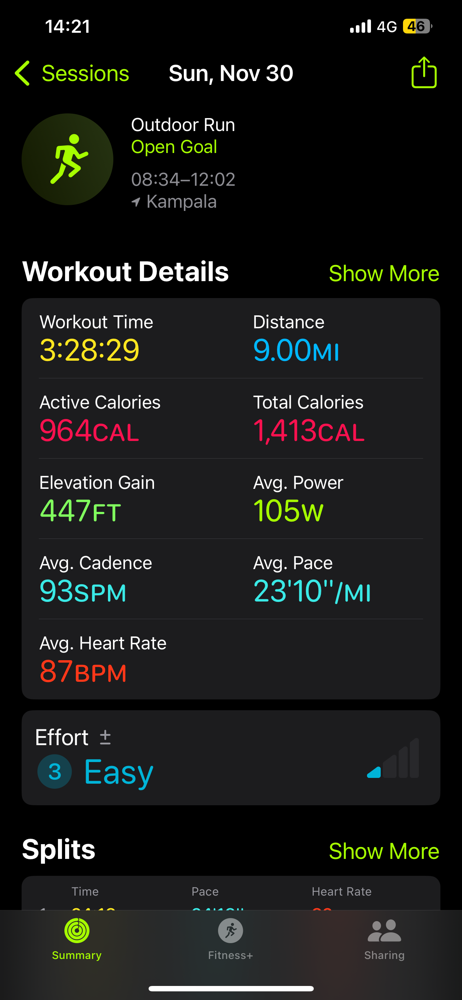

Workout Performance:
Calorie Burn & Comparative Analysis
// A. Nov 30 · Kampala · Easy effort · Flat terrain · 447 ft gain · Recovery / baseline session
// B. Nov 15 · Bufumbira · Endurance hike · 3,503 ft gain · Peak ~11,390 ft · Mgahinga mountain traverse
// C. Mar 1 · Kampala · Hard effort · 1,796 ft gain · Higher power · Training intensity progression
// · Subject: 45-year-old male · 215 lbs (~97.5 kg) · BMR est. 1,992 cal/day · Active calories analyzed
// · Pattern: 3 → 5 → 7 effort scale · progressive periodization · solid foundation, room for efficiency gains
| # | Workout | Location / Date | Distance | Elevation Gain | Active Cal | Effort |
|---|---|---|---|---|---|---|
| A | Easy Run/Walk | Kampala · Nov 30 | 9.00 mi | 447 ft | 964 cal | 3 / Easy |
| B | Mountain Hike | Bufumbira · Nov 15 | 9.50 mi | 3,503 ft | 2,071 cal | 5 / Moderate |
| C | Hard Training Run | Kampala · Mar 1 | 10.41 mi | 1,796 ft | 1,649 cal | 7 / Hard |
Recovery Baseline — The Low-Intensity Anchor
9.00 mi · 3:28:29 · 447 ft Gain · 964 Active Cal · 87 BPM · 105W · 93 SPM
Workout A functions as the recovery anchor of this training block. A pace of 23'10"/mi and average heart rate of 87 BPM — approximately 50% of estimated maximum for a 45-year-old (220−45=175 BPM max) — places this firmly in the fat-burning zone. The low cadence (93 SPM vs. the optimal 160–180 SPM for running) strongly suggests walking segments are woven throughout.
The 447 ft elevation gain confirms flat Kampala terrain with negligible climbing demand. At 278 active cal/hr, this is the least efficient session per unit time but serves its purpose: active recovery, maintaining aerobic base without taxing the musculoskeletal system. For a 215 lb subject at this heart rate, the device estimate of 964 active calories aligns closely with MET-based projections (~4 MET × 97.5 kg × 3.47 hrs = ~900–1,000 cal).
Calorie Burn Breakdown
| Metric | Value | Context |
|---|---|---|
| Active Calories | 964 cal | Device estimate; MET ~4 confirms accuracy |
| Total Calories | 1,413 cal | Includes ~288 cal resting contribution (83 cal/hr × 3.47 hr) |
| Active Cal / Hr | ~278 cal/hr | Lowest of the three — consistent with low intensity |
| Active Cal / Mile | ~107 cal/mi | Efficient stride economy despite slow pace |
The Mountain Traverse — Endurance as the Primary Variable
9.50 mi · 9:37:22 · 3,503 ft Gain · Peak ~11,390 ft · 2,071 Active Cal · 129 BPM · 112W · 39 SPM
Workout B is categorically different. The 9.6-hour duration, 3,503 ft elevation gain, and a cadence of 39 SPM (unmistakably a hiking gait — approximately half the running cadence) indicate a demanding mountain traverse, likely in Mgahinga Gorilla National Park. The highly variable splits (33 min/mi early, slowing dramatically on ascent to 2+ hrs/mi equivalent) are characteristic of rugged, off-trail mountain terrain.
At altitude (~11,390 ft peak), the cardiovascular system works harder per unit of mechanical work — accounting for the elevated average heart rate (129 BPM, ~74% of max) despite the slow pace. Device algorithms frequently underestimate hiking calorie burn by 10–20% due to non-steady-state movement; actual active expenditure likely reached 2,300–2,500 cal.
Elevation as Caloric Multiplier
The elevation premium is significant. Each 1,000 ft of vertical gain burns approximately 0.5 cal/lb in a 215 lb subject — adding roughly 215 cal × 3.5 segments = ~750 additional calories beyond flat-ground expectation. This is why Workout B generates the highest total calorie burn (2,071 active, 3,315 total) despite its lower hourly rate (215 cal/hr) compared to Workout C.
Risk Factors for a 45-Year-Old
The 9+ hour duration at moderate-to-high heart rate, combined with altitude, introduces meaningful physiological risk: altitude sickness, dehydration, joint overload, and prolonged cortisol elevation. Post-B recovery should include at minimum 48 hours of reduced activity. This type of session — though extraordinary for endurance adaptation — should not be repeated more than once every 2–3 weeks.
The Hard Session — Highest Efficiency, Clear Progression
10.41 mi · 3:22:52 · 1,796 ft Gain · 1,649 Active Cal · 126 BPM · 149W · 103 SPM
Workout C is the standout performance session. At 149W average power — 42% above Workout A's 105W and 33% above Workout B's 112W — it demonstrates the greatest mechanical output. The pace of 19'28"/mi is 20% faster than Workout A's 23'10"/mi, and the cadence of 103 SPM (while still below optimal) represents the most run-like gait of the three sessions. Heart rate at 126 BPM (~72% max) places this in the sustained aerobic-to-threshold range.
The calorie burn rate of 488 active cal/hr is the most efficient across all three workouts — meaningful because it delivers the most fitness stimulus per unit time. The 1,796 ft elevation gain adds a significant strength-endurance component without the extreme demands of Workout B.
Signs of Fitness Progression
Comparing A (Nov 30) to C (Mar 1) over three months: pace improved 20%, power increased 42%, cadence improved 11%. This trajectory — combined with a harder effort level — suggests genuine cardiovascular and neuromuscular adaptation. If this trend continues, sub-15 min/mi pace targets are achievable within 3–6 months of consistent C-type sessions.
Three sessions. One body. The prescription: more C, periodic B, sufficient A.
And always: the mountain earns its calories differently than the road.





The Body Was Always the Laboratory
Three workouts. One body at 45 years and 215 lbs, in Kampala and on the slopes of Bufumbira. The data resolves into a clear picture: solid aerobic foundation, meaningful endurance capacity, and an emerging power output that — if sustained — points toward genuine fitness progression over the November-to-March window.
The calorie math is instructive but secondary. What the data actually shows is three different negotiations between intention and terrain. Workout A is maintenance without ego. Workout B is commitment to a landscape that does not yield to pace targets. Workout C is the clearest signal — faster, harder, more efficient — which is what months of the other two make possible.
The prescription that follows from the numbers is not complicated: increase the frequency of C-type sessions, limit ultra-long B-type events to monthly, and keep A as the recovery substrate that makes the other two sustainable. Add progressive cadence work toward 160 SPM. Introduce one strength session weekly. Target sub-15 min/mi pace within six months.
The mountain earns its calories differently. The road gives you the data to understand what the mountain built. Both are necessary. Neither is sufficient. Same body. Different terrain. That's not just training. That's the architecture.